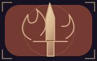
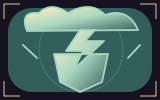
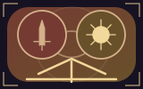

Ostatnie piętno
combat · gold

combat · gold

combat · gold
combat · gold
divine · gold

divine · gold

divine · gold

element · gold
element · gold
element · gold
arcane · gold

arcane · gold
arcane · gold
necro · gold
necro · gold

necro · gold
tech · gold
tech · gold
tech · gold

combat / divine · silver
combat / element · silver
combat / arcane · silver
combat / necro · silver

combat / tech · silver
divine / element · silver
divine / arcane · silver
divine / necro · silver
divine / tech · silver
element / arcane · silver
element / necro · silver
arcane / tech · silver
element / tech · silver
arcane / necro · silver
necro / tech · silver